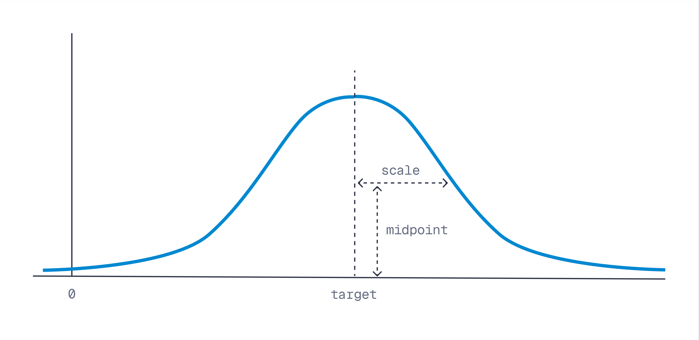

Build the score up one term at a time.
Additive scoring, why scale matters more than you'd expect, and what decay is actually doing to the recency field.
01Start simple
The starting point is just semantic similarity, unmodified:
Then add terms, one signal at a time, each scaled by a weight that controls how much it's allowed to move the ranking:
This is additive scoring: every signal contributes independently, and the weight is the only knob that decides how loud each one gets. It's not the only way to combine signals — you could multiply, or take a max — but additive is the easiest to reason about, debug, and explain to a non-technical stakeholder, which matters more than it sounds like it should.
02Why scale matters
Additive scoring has one sharp edge: every term is on a different natural scale, and the formula has no idea. Cosine similarity lives in roughly [-1, 1]. A raw popularity count might live in the thousands. Add them directly and the popularity count doesn't "contribute" to the score — it replaces it.
That's why both popularity and recency in this dataset are precomputed into a normalised [0, 1] range before they ever reach the formula. Normalisation isn't a nice-to-have step, it's what makes the weights meaningful in the first place — a weight of 0.2 only means "twenty percent as important as similarity" if both terms are already on comparable footing.
03Decay: turning "distance from ideal" into a score
Popularity is simple — bigger is always better, so it plugs straight into the sum. Recency is subtler: the payload doesn't store "how recent," it stores a recency value already expressed as closeness to the ideal of 1.0 (just purchased). A decay function turns that "distance from ideal" into a smooth score between 0 and 1, and the shape of the curve changes how forgiving it is:
| Shape | Behaviour |
|---|---|
| Linear | Score falls off at a constant rate as an item moves away from the target. Predictable, easy to reason about. |
| Exponential | Fast drop-off near the target, then a long, flat tail — mildly stale items are barely penalised, very stale ones fall hard. |
| Gaussian | Gentle near the target, steep in the middle distance, flat again far out — a soft window around "recent enough." |
All three take the same inputs — a target, a scale, and a midpoint — and just reshape the curve between them. Swapping decay type doesn't change what's being measured, only how harshly distance from that target is punished.

target is where the score peaks, scale is how far you have to move before midpoint kicks in.04Try it: same item, different weights
This is the "Strap top" point from the dataset again — semantic similarity of roughly 0.73 against a summer-dress-style query, popularity 0.858, and a recency decay value of 0.915. Drag the weights and watch each term's contribution to final_score move.
Score components
item: Strap top · sim 0.730 · popularity 0.858 · recency 0.915Push either weight toward 1.0 and the bar makes the failure mode obvious: similarity — the thing that made this a relevant candidate in the first place — gets crowded out. The formula still runs, it just stops being a semantic search.
Note: Formula queries can only be used as a rescoring step.
05The reframe
None of this touches the underlying semantic search. Business logic doesn't change what "similar" means — it changes the ranking function applied after similarity has already done its job. That separation is what makes the next scene possible: Qdrant lets you express this formula as part of the query itself.
Swapping the decay type doesn't change what's being measured, only how harshly the distance from the target is punished.